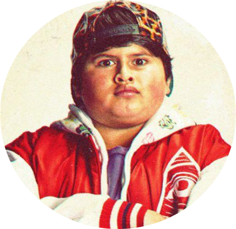
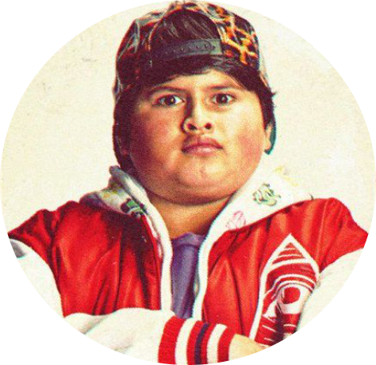

Barry and Adam. BARRY (CONT’D) Look at that. That’s more pollen than you and I will ever see in a
lifetime. ADAM (playing with the pollen) It’s just a status symbol. I think bees make too big a deal
out of it. BARRY Perhaps, unless you’re wearing it, and the ladies see you wearing it. ANGLE ON: Two
girl bees. "Bee Movie" - JS REVISIONS 8/13/07 12. ADAM Those ladies?
KŌWHITI
(WATER CRESS)
(WATER CRESS)
right in the midst of a group of balls. KEN (O.C) That was on the line! The other bees start walking
around amongst the immense, yellow globes.
KAWAKAWA (MACROPIPER EXCELSUM)
to be a Pollen Jock. You have to be bred for that. BARRY Right. Pollen Jocks cross in close proximity to Barry and Adam. Some pollen falls off, onto
to be a Pollen Jock. You have to be bred for that. BARRY Right. Pollen Jocks cross in close proximity to Barry and Adam. Some pollen falls off, onto
BUZZ I’m picking up a lot of bright yellow, could be daisies. Don’t we need those? SPLITZ Copy that
visual. We see what appear to be yellow flowers on a green field. "Bee Movie" - JS REVISIONS
8/13/07 24. They go into a deep bank and dive. BUZZ Hold on, one of these flowers seems to be on the
move. SPLITZ Say again...Are you reporting a moving flower? BUZZ Affirmative. SEQ. 900 - “TENNIS GAME”
The pollen jocks land. It is a tennis court with dozens of tennis balls.


Vanessa walks back to the service line, BOUNCES the ball. Each time it BOUNCES, the other bees cringe
and GASP. ANGLE ON: Barry, terrified. Pure dumb luck, he’s not getting squished. BARRY (with each
bounce) Very close...Gonna Hurt...Mamma’s little boy. SPLITZ You are way out of position, rookie. ANGLE
ON: Vanessa serving. We see Barry and the ball up against the racket as she brings it back. She tosses
the ball into the air; Barry’s eyes widen. The ball is STRUCK, and the rally is on. KEN Coming in at you
like.
KAREAO
(Ripogonum scandens)
(Ripogonum scandens)

Vanessa, Ken, Andy, and Anna ENTER the apartment. VANESSA Ken, can you close the window please? KEN
Huh? Oh. (to Andy) Hey, check out my new
I hope that was alright. Ken hits his head on the table. BARRY I’m going to go drain the old stinger.
KEN Yeah, you do that. Barry EXITS to the bathroom, grabbing a small piece of a VARIETY MAGAZINE on
the way. BARRY Oh, look at that. Ken slams the champagne down on the table. Ken closes his eyes and
buries his face in his hands. He grabs a magazine on the way into the bathroom. SEQ. 2800 - “BARRY
FIGHTS KEN” INT. BATHROOM - CONTINUOUS Ken ENTERS,
NIKAU
(RHOPALOSTYLIS SAPIDA)
(RHOPALOSTYLIS SAPIDA)

Montgomery points to Barry’s parents. MONTGOMERY You’re an illegitimate bee, aren’t you Benson? ADAM
He’s denouncing bees! All the bees in the courtroom start to HUM. They’re agitated. MONTGOMERY And
don’t y’all date your cousins? "Bee Movie" - JS REVISIONS 8/13/07 87. VANESSA (standing,
letting go of Adam) Objection! Adam explodes from the table and flies towards Montgomery. ADAM I’m
going to pin cushion this guy! Montgomery turns around and positions himself by the judge’s bench.
LIONS MANE
(HERICIUM ERINACEUS RUSSULALES)
(HERICIUM ERINACEUS RUSSULALES)

I knew you could do it. Highfive! She high 5’s Barry, sending him crashing to the table. He bounces
right back up. VANESSA (CONT'D) Oh, sorry
TĪ KŌUKA
(CABBAGE TREE
(CABBAGE TREE

smelly, big-headed, bad breath, stink-machine. "Bee Movie" - JS REVISIONS 8/13/07 95. I
believe we’re all aware of what they do in the woods.
They don’t know what to do. BARRY Hmmm. ADAM They’re laying out, they’re sleeping in. I heard your
Uncle Carl was on his way to San Antonio with a cricket. BARRY At least we got our honey back. They
walk through the empty factory. ADAM Yeah, but sometimes I think, so what if the humans liked our
honey? Who wouldn’t? It’s the greatest thing in the world. I was excited to be a part of making it.
ANGLE ON: Adam’s desk on it’s side in the hall. ADAM (CONT’D) This was my new desk.
KŌTUKUTUKU
(Fuchsia excorticata)
(Fuchsia excorticata)
BARRY So you’ll just work us to death? TRUDY (laughing) We’ll sure try. make too big a deal out of it.
BARRY Perhaps, unless you’re wearing.
The middle column has numbers, and the right column has job openings flipping between “open”,
“pending”, and “closed”. BUZZWELL (CONT’D) Oh, I’m sorry. The Krelman just closed out. ADAM Oh! He
takes the hat off Adam. BUZZWELL Wax Monkey’s always open. The Krelman goes from “Closed” to “Open”.
MAMAKU
(BLACK TREE FERN)
(BLACK TREE FERN)


SPLITZ This is the coolest. What is it? They stop at a BALL on a white line and look up at it.
JACKSON I don’t know, but I’m loving this color. SPLITZ (smelling tennis ball) Smells good. Not like
a flower. But I like it. JACKSON Yeah, fuzzy. BUZZ Chemical-y. JACKSON Careful, guys, it’s a little
grabby. Barry LANDS on a ball and COLLAPSES. "Bee Movie" - JS REVISIONS 8/13/07 25. BARRY Oh
my sweet lord of bees. JACKSON Hey, candy brain, get off there! Barry attempts to pulls his legs
off, but they stick. BARRY Problem! A tennis shoe.
ENTER FRAME. The hand picks up the ball with Barry underneath it. BARRY (CONT'D) Guys! BUZZ This
could be bad. JACKSON Affirmative.
OYSTER MUSHROOM
(PLEUROTUS OSTREATUS)
(PLEUROTUS OSTREATUS)

BARRY (in slow motion) Help me! JACKSON You know, I don't think these are flowers. SPLITZ Should
we tell him? JACKSON I think he knows. BARRY (O.S)
He nimbly avoids the rain at first. BARRY (CONT’D) Whoa. Whoa! Can’t fly in rain! Can’t fly in rain!
Can’t fly in-- A couple of drops hit him, his wings go limp and he starts falling. BARRY
(CONT'D) Mayday! Mayday! Bee going down! Barry sees a window ledge and aims for it and just
makes it. Shivering and exhausted, he crawls into an open window as it CLOSES. SEQ. 1100 - “VANESSA
SAVES BARRY” INT. VANESSA’S APARTMENT - CONTINUOUS Inside the window, Barry SHAKES off the rain like
adle.

Closes the door behind him. He’s not happy. Barry is washing his hands. He glances back at Ken. KEN
You know, I’ve just about had it with your little mind
PUHA
(SOW THISTLE)
(SOW THISTLE)

Montgomery winks at his team. BARRY Adam, don’t! It’s what he wants! Adam shoves Barry out of the
way. Adam STINGS Montgomery in the butt.
The jury REACTS, aghast. MONTGOMERY Ow! I’m hit! Oh, lordy, I am hit! The judge BANGS her gavel.
JUDGE Order! Order! Please, Mr. Montgomery. MONTGOMERY The venom! The venom is coursing through my
veins! I have been felled by a wing-ed beast of destruction. You see? You can’t treat them like
equals. They’re strip-ed savages! Stinging’s the only thing they know! It’s their way! ANGLE ON:
Adam, collapsed on the floor. Barry rushes to his side.
HARAKEKE
(FLAX)
(FLAX)

What do you mean? ADAM We’ve been living the bee way a long time. 27 million years. DISSOLVE TO: SEQ.
3600 - “HONEY ROUNDUP” EXT. HONEY FARMS APIARY - MONTAGE SARAH (V.O) Congratulations on your victory.
What are you going to demand as a settlement? BARRY (V.O) (over montage) First, we’re going to demand
a complete shutdown of all bee work camps. Then, we want to get back all the honey that was ours to
begin with. Every last drop. We demand an end to the glorification of the bear as
MANUKA
(LEPTOSPERMUM
SCOPARIUM)
(LEPTOSPERMUM
SCOPARIUM)

This was my new job. I wanted to do it really well. And now...and now I can’t. Adam EXITS. CUT TO:
SEQ. 3900 - “WORLD WITHOUT BEES” INT.
are walking up the stairs to the roof. BARRY I don’t understand why they’re not happy. We have so
much now. I thought their lives would be better. "Bee Movie" - JS REVISIONS 8/13/07 101.
VANESSA Hmmm. BARRY They’re doing nothing. It’s amazing, honey really changes people. VANESSA You
don’t have any idea what’s going on, do you? BARRY What did you want to show me?
HOROPITO
(Pseudowintera colorata)
(Pseudowintera colorata)